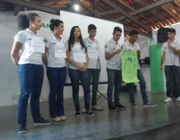

Postado em: 30/08/2018
SEMANA PRESENTE: PROTAGONISMO JUVENIL
Você pode reinventar o mundo.
No tocante aos eventos educacionais, o CETIJAB, promoveu, dos dias 06 à 11 de agosto, o projeto instituído pela SEDUC: Semana Presente, voltado para o protagonismo estudantil, com o seguinte tema: Você pode reinventar o mundo; onde ocorreu debates, palestras e dinâmicas, que abordaram assuntos como a relação professor x aluno, bullying e gestão escolar, formação do grêmio estudantil na escola e a realização do concurso de redação.
Empenhados em auxiliar o desenvolvimento estudantil, a gestão junto aos professores, instituiu na escola o projeto monitoria de classe, que tem como objetivo, alunos monitores que auxiliam os demais alunos com dificuldades em seus afazeres, sendo mais uma forma de elevar o desempenho dos mesmos.
A gestão, comprometida com a preparação do corpo discente para o ENEM e a OBMEP, disponibilizou aulões preparatórios, além de um concurso de redação e aulas de reforço para os alunos selecionados para a 2ª fase da OBMEP, com o Prof. Cleomar Cosme, visando um melhor desempenho.
JOVEM DE FUTURO
Dos dias 06 à 31 de agosto, foram realizadas as ações da metodologia Jovem de Futuro, nas quais os professores desenvolveram projetos, realizados em âmbito escolar, voltados para maior integração do aluno nas atividades escolares.
GRÊMIO ESTUDANTIL
Realizado no dia 16/08, na instituição, a apresentação da Assembleia Geral do Grêmio Estudantil, onde foi colocado em pauta assuntos como: Aprovação do Estatuto do grêmio e da comissão eleitoral. Toda a equipe docente e discente participou da assembleia, a qual ressalta mais uma vez o valor da democracia no âmbito social escolar.
CURSO DE REDAÇÃO
No dia 15/08 foi realizado o cursinho de redação para os alunos do 3° ano “A” e “B”, com a renomada Professora Rosiara Araújo, em prol de elevar os conhecimentos do alunado em um ponto tão importante para o ENEM: a redação.
CURSO CAVALCANTE
No dia 30 desse mês, foi realizado na instituição, mais um aulão preparatório para o ENEM. O mesmo começou por volta das 13:30h com os professores renomados do Curso Cavalcante.